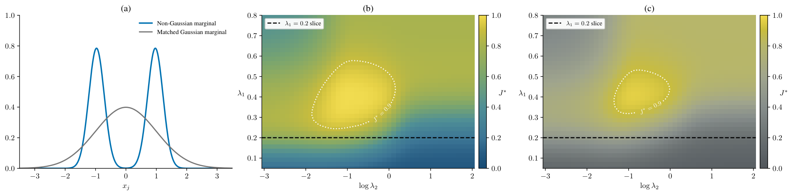

A companion Lean 4/Mathlib package machine-checks the quantitative Gaussian comparison (Proposition C.4) and its concentration tools, with statement correspondence and sorry/axiom checks.
Abstract
We study convex empirical risk minimization (ERM) with non-Gaussian features and nonsmooth penalties through a surrogate driven by a single Gaussian vector. The surrogate preserves the penalty and calibrates its coefficients using the actual joint law of the feature-label model. We prove that this population calibration exists and is unique. We prove a Gaussian approximation for fresh prediction scores when the data satisfy a Poincaré inequality. Together with regularity conditions on the losses, this approximation yields agreement between the ERM minimizer and its surrogate in normalized means and prediction variances, as well as formulas for prediction and classification risks. The result covers general uniformly strongly convex penalties and pure Lasso under projection anti-concentration. The core proof relies on a cavity Hamilton-Jacobi argument that compares the main statistics of the two minimizers without differentiating the penalty.
Problem
Convex empirical risk minimization with non-Gaussian, dependent features and nonsmooth penalties such as Lasso lacks a general surrogate description. Gaussian universality results do not cover cases where the joint feature-label law affects learning errors.
Approach
The authors define a one-sample surrogate driven by a single Gaussian vector. It keeps the original penalty and calibrates its coefficients from the true joint law of features and labels via fixed-point equations. A cavity Hamilton-Jacobi interpolation compares the ERM and surrogate statistics without differentiating the penalty. A companion Lean 4 package that pins Mathlib verifies the quantitative positive-probe Gaussian comparison (Proposition C.4) and its concentration tools.
Results
The calibration exists and is unique. Under a Poincaré inequality, fresh prediction scores are approximately Gaussian, and ERM and the surrogate agree in normalized means, prediction variances and prediction/classification risks. This covers uniformly strongly convex penalties and pure Lasso under projection anti-concentration. Simulations show close agreement on support recovery.

Figure 4: Feature marginals and predicted support recovery. (a) Exact block-coordinate marginal densities for the non-Gaussian design (blue solid) and matched Gaussian design (gray solid); both have mean zero and variance one, and the full designs share the same covariance. (b,c) Surrogate-predicted Jaccard J^{*} on the 36\times 46 penalty grid for the non-Gaussian (blue–yellow) and matched Gaussi